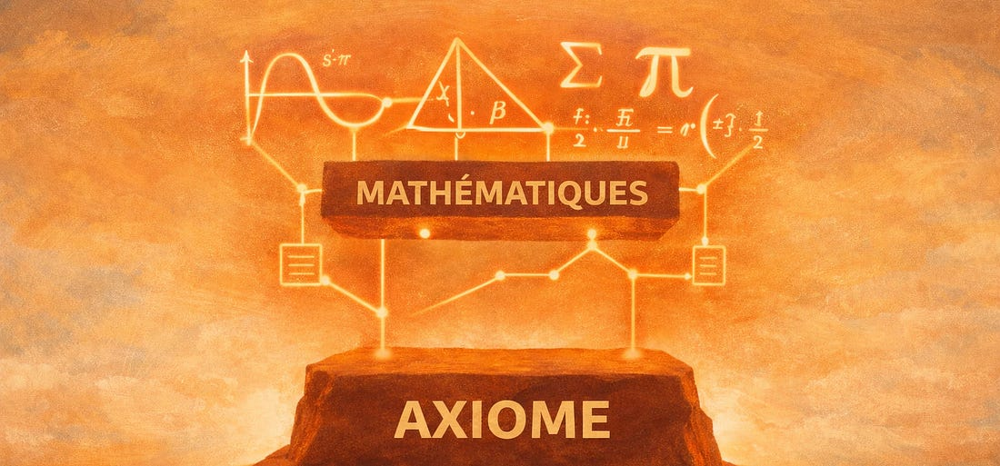

Introduction
Il y a des citations philosophiques si célèbres qu’elles finissent par se charger d’un sens bien plus étroit que celui qu’elles portaient. Celle-ci en est l’exemple parfait.
« Le cœur a ses raisons que la raison ne connaît point. »
Pascal
On y voit généralement un appel à l’amour, une permission de ne pas réfléchir. Mais Pascal, mathématicien, ne parlait pas d’amour mais de foi religieuse. Il a voulu mettre en avant quelque chose de plus fondamental : l’idée que certaines vérités se ressentent avant de se démontrer. Qu’elles sont premières .
C’est cette forme “d’intuition” que j’ai envie de réhabiliter aujourd’hui, non pas comme un don mystérieux réservé à quelques-uns, mais comme quelque chose que l’on peut apprendre à écouter. Et avec elle, une question pratique : comment créer les conditions pour que cette intuition apparaisse ?
La proposition de Pascal
Pour comprendre Pascal, il faut comprendre qui il était. C’était un mathématicien qui a posé les bases du calcul des probabilités au XVIIe siècle. Un homme qui pensait en termes de démonstration, de preuve, de structure.
Et c’est justement parce qu’il était mathématicien qu’il a compris une chose que beaucoup refusent d’admettre : tout raisonnement repose sur des fondations qui, elles, ne se démontrent pas.
En mathématiques, on accepte comme évident que deux droites parallèles ne se croiseront jamais. Ce n’est pas démontré, c’est posé. C’est ce que l’on nomme un “axiome”. Et c’est sur ces piliers non démontrables que repose toute la logique mathématique.

Pascal dans sa citation dit la même chose de la foi religieuse : elle est cet axiome. On ne peut pas la démontrer et c’est précisément pour ça qu’elle précède la raison. La raison ne fait que confirmer, après coup, ce que le cœur sait déjà. Ainsi, il formule :
« Les principes se sentent, les propositions se concluent. »
Appliqué à l’amour, puisque c’est ainsi qu’on entend le plus souvent cette phrase, ce raisonnement met en avant que l’on tombe amoureux d’abord.
Ensuite, on cherche à se le rationaliser : ses yeux, son humour, sa façon d’être. Mais ce ne sont pas ces qualités qui causent l’amour. La preuve est simple : si on les énumère à quelqu’un d’autre, cette personne ne tombera pas amoureuse. On ne tombe pas amoureux de qualités. On tombe amoureux de quelque chose de premier et la raison arrive après, pour habiller ce que le cœur savait déjà.
Le piège de l’intuition
Mais voilà où ça devient délicat.
Si les vérités du cœur sont des intuitions premières, on pourrait en déduire qu’elles sont toujours immédiatement perceptibles. Que si ta vocation existe, elle s’impose. Que si ce n’est pas évident, c’est qu’elle existe pas.
On imagine tous cet enfant qui sait à huit ans qu’il sera pilote de chasse. Tout est tracé, clair, intuitif. Il ne reste plus qu’à travailler. Et il y a quelque chose d’attrayant dans cette image, un confort, une simplicité que beaucoup envient à l’aune d’une société vidée de sens et de direction.
La plupart des gens ne sont pas cet enfant. Et pour eux, le raisonnement devient : si ce n’est pas évident, c’est peut-être que ça n’existe pas. Si je ne suis pas passionné d’un sujet ou éperdument amoureux au premier regard alors c’est que ce n’est pas la bonne passion ou la bonne personne.
C’est à mon sens un raisonnement faux et potentiellement dangereux.
L’intuition en tant que perspective
A titre personnel, l’exemple de ma pratique sportive illustre bien l’idée d’intuition en tant que perpective.
Voici les sports que j’ai pratiqués dans différents clubs au fil des années : le kayak, le roller, le surf, le VTT, l’athlétisme, la course à pied, le street workout. Ces activités me sont souvent apparues comme variées, sans logique commune apparente.
Avec le recul et une nouvelle perspective, j’ai réalisé récemment qu’un dénominateur commun existait. La nature. Chaque pratique est reliée à un lieu, un élément ou un espace extérieur.
Ce n’est pas que la vérité était absente. C’est qu’il fallait trouver le bon angle pour la voir. A mon sens, si l’intuition n’est pas toujours donnée d’emblée, notre chemin éclairera toujours nos décisions prisent avec le coeur.
Santiago et le trésor
Dans L’Alchimiste de Paulo Coelho, un jeune berger andalou nommé Santiago rêve d’un trésor caché au pied des Pyramides d’Égypte. Il quitte tout. Il traverse l’Espagne, puis l’Afrique du Nord, apprend à lire les signes du désert, rencontre des sages, surmonte des épreuves intérieures autant qu’extérieures.
Au bout du voyage, il découvre que le trésor se trouvait là où il avait dormi la première nuit : dans une vieille église en ruines, en Espagne, à des milliers de kilomètres de là.
Ce n’est pas une histoire sur l’inutilité du voyage. C’est l’inverse. Sans la traversée du désert, sans chaque étape arrachée, Santiago n’aurait jamais eu la perspective nécessaire pour voir ce qui avait toujours été là. Le voyage n’était pas un détour. C’était la condition de la révélation.
Les intuitions profondes fonctionnent parfois de la même façon. Elles sont là. Mais elles attendent qu’on ait fait suffisamment de chemin pour les reconnaître.
Je n’entends pas le terme '“chemin” ici comme une période nécessairement longue. On l’associe souvent à l’âge ou l’expérience, mais on peut avoir 60 ans et moins d’intuition qu’un jeune de 30 ans qui a vécu et agit en conscience en décidant d’affronter ses grands questionnements.
Tu ne pourras jamais fuir ton cœur. Alors autant écouter ce qu’il a à te dire
Paulo Coelho, L’alchimiste (1988)
Ce que l’intuition mérite
Alors que faire quand rien n’est évident ?
D’abord, ne pas conclure trop vite que l’on a pas d’instinct. L’absence d’intuition ne veut pas dire absence de vérité, cela veut dire qu’on n’a peut-être pas encore la bonne perspective.
Pour y accéder, j’ai personnellement une philosophie d’itérations que j’ai développée dans mon premier essai : Cogito #001 . Je suis persuadé que l’action et l’inertie nous éclaire sur ce que l’on veut et qui on est.
Ainsi, certaines vérités dites '“du coeur” se sentent avant de se comprendre. Et les ignorer parce qu’elles ne s’expriment pas en langage rationnel, c’est passer à côté de quelque chose d’à mon sens essentiel.
Qui sur son lit de mort regrette d’avoir trop écouté son intuition ?
Alors peut-être qu’il est temps de lui redonner sa force. Travailler sur soi pour qu’elle nous soit audible plus souvent et avoir le courage de l’écouter quand on l’entend.
À bientôt pour de nouvelles réflexions
Elouan